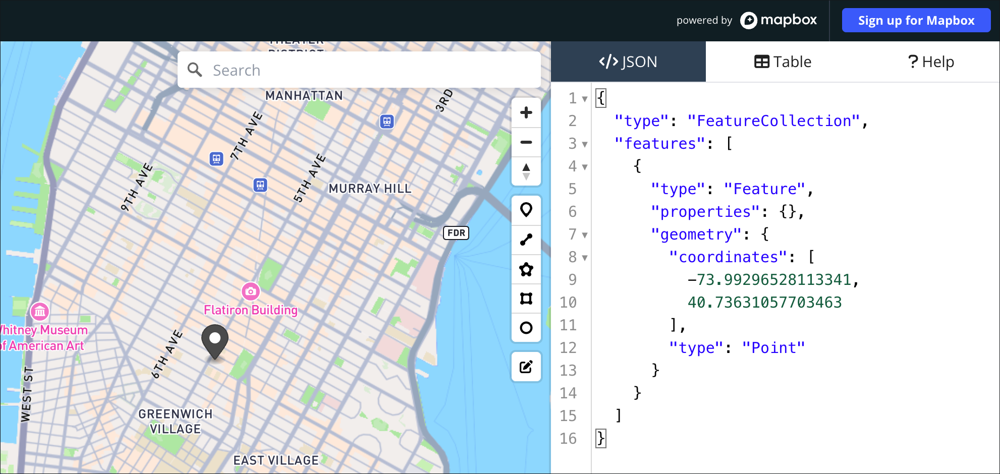
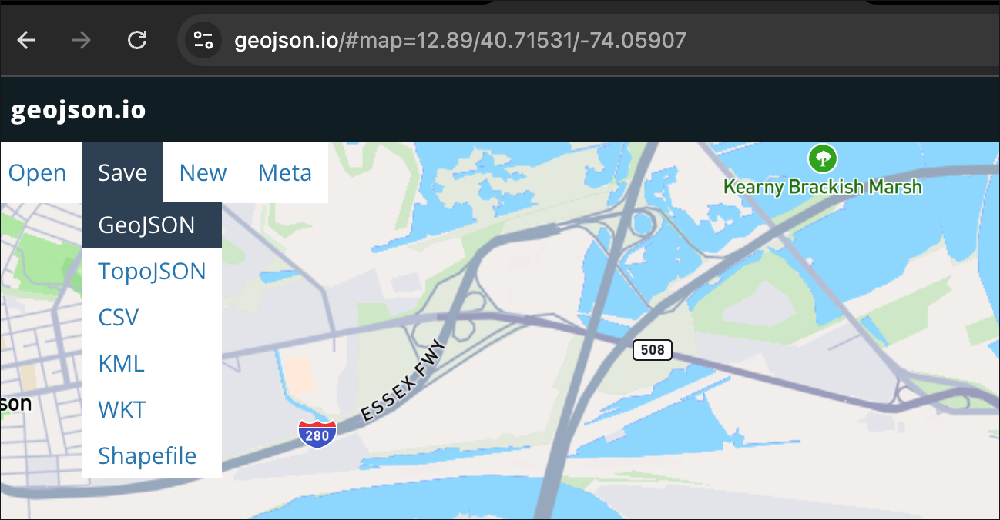
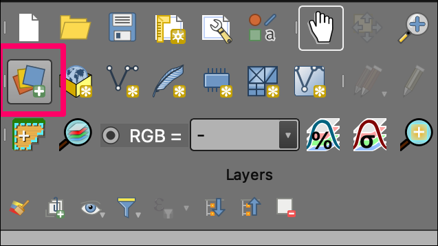
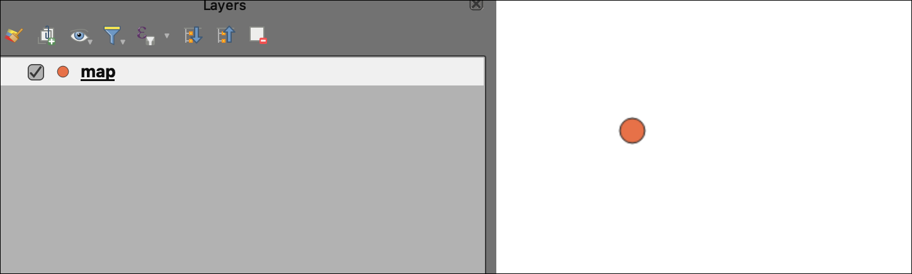
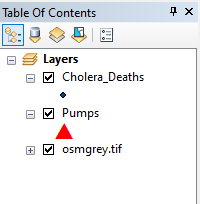
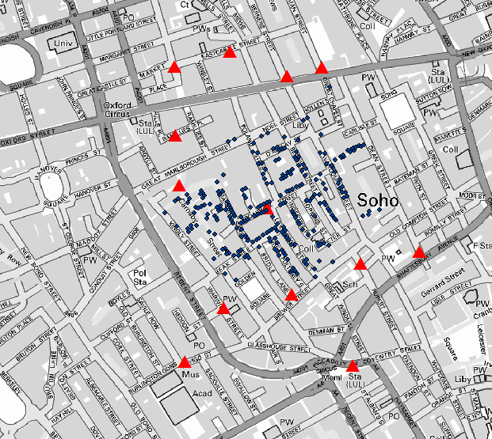
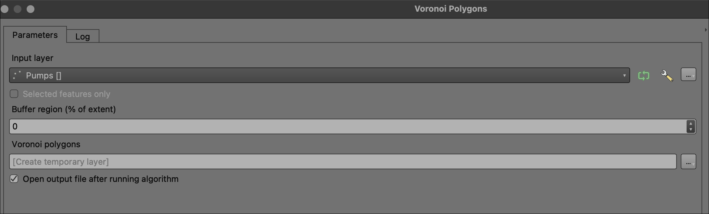

Spatial Thinking with GIS: Week 1 Class 1 Demonstration Lab
Spring 2026 | UENV 3200 - CRN 11009 + UURB 3210 - CRN 111008
🧭 Preamble
In this first demonstration lab, we will explore spatial data in two parts: the first will be an exercise we complete as Class 1 Assignment; and the second will be an exploration of John Snow’s original Cholera Pump Data now in modern, digital format. This second exploration will also be featured in the first week’s lecture as the ‘first GIS’; here the spatial relationship of London’s Victorian Era water pumps to household deaths is uncovered.
The following video covers the demonstration lab, both Part I and Part II:

🗺️ Part I: Spatial Data
A large part of this introductory course is understanding and utilizing two primary spatial data models: the vector model and the raster model. Here we will look at a primary vector feature type - the ‘simple’ point in a particular format known as GeoJSON.

Step 1:
Together we will navigate via an internet browser to geojson.io. Position the online map to your current neighborhood and place a point near were you live. It can be as precise as you would like it to be: building rooftop for high precision; a nearby intersection for less precision.

Step 2:
Next, download the resulting file as map.geojson using the Save option for format type GeoJSON:

Step 3:
While this download file with the file extension .geojson can be opened in a text editor certainly, we cannot ‘see it’ on a base map until we utilize a ‘spatially aware’ software platform, i.e. some type of Geographic Information System (GIS). Here is where QGIS comes in - the software we will utilize throughout this course.
Open QGIS from either your own machine in which you have installed the software, and/or a lab computer in which QGIS is previously installed. In the lab computers, you can access QGIS from the start menu > statistic and research folder > QGIS.
Once open, we will utilize the Data Source Manager to point first to the map.geojson file; import the file; and finally place the points feature onto a basemap for context.
Step 4:
To access the Data Source Manager, find the icon at the upper left of the QGIS Interface that looks like several papers stacked atop each other:

Next, open the tool, and point to the Vector Layer option then source the layer to it current position on the local machine; finally click the add button in the lower right of the dialog box.


As is, this mapped point is not particularly useful as we have no context, i.e. a basemap. There are many ways to incorporate basemaps into QGIS. In this example, we will use what is known as a QGIS ‘Plugin’ utility. These are extensions of GIS functionality provided typically by 3rd-party providers/developers as an open source utility for the QGIS community to use at will.
To start, we will access the top menu for Plugins and search for QuickMapServices

Once installed, you will see new ‘globe’ icons in the top toolbar location. Click on the globe icon in the middle with the plus sign, and point to the default OpenStreetMap (OSM) option:

Once completed, we can see a context basemap that helps us contextualize our newly created GeoJSON points feature through the OSM Standard basemap product:

This completes the in-class Part #1. To finish, you will resume at the start of Class 1 Assignment. Typically, weekly assignments will be submitted to Canvas for evaluation/grading on a weekly basis. However, this first week we simply post to the class Slack Team as described in the assignment.
🚰 Part II: Recreating John Snow’s ‘Broad Street Pump’ Map

Step 1:
We will first download the recreation data of John Snow’s ‘Broad Street Pump Map’ and run a series of GIS analysis tasks to derive insight and produce quantitative results about both the location of the pumps and the resulting deaths from the Broad Street Pump itself.

📦 Data
The data for this demonstration lab comes from the QGIS project located HERE.
To start, directly download a prepared, compressed directory which includes all necessary data as well as a QGIS .qgs project file.
Once complete, extract the zipped directory and open the directory folder. The results - including the project .qgs - should appear as follows:

Step 1: Load Data
- Navigate to the directory folder
demo_1-partII-JS_datathen double-click thedemo_part2-john-snow.qgsfile. This will prompt QGIS to load the project on the machine. The Table of Contents should feature the following 2 vector layers and 1 raster layer (.tif):


📐 Create Thiessen Polygons
Thiessen polygon boundaries define the area closest to each feature relative to all other features. Thiessen polygons are generated from a set of three or more features. In this case, our features will be the Pumps points.
Thiessen polygons are also referred to as spatial monopoly or Voronoi diagrams. This type of analysis assumes that there are clusters of features that are distinct within the larger dataset of features; again in this case, the Pumps points are our input features.
This type of analysis needs planar units, not degrees, for valid output results. We will touch on this issue in class 2, and more in depth in class 6 - Map Projections. For now, note that the project utlizes the British National Grid with a linear unit of meter, thus we don’t need to adopt another map projection in order to proceed with analysis.


meter.QGIS provides many analysis tools easily accessible, often from the Processing Toolbox:


voronoi.Utilizing the Voronoi polygons tool, we will input the Pumps and output to a temporary file location:

Voronoi polygons Analysis Tool Dialog Box within the Processing Toolbox.The results of the analysis tool should be a new polygon feature that represents the ‘clusters’ or ‘neighborhoods’ of distinct pump locations. If we open the attribute table of the new polygon feature, we can ascertain which polygon features the predominance of death locations via the ID attribute:

Voronoi polygons result.The resulting Voronoi Polygons tell us the extent of distance, or travel, for each pump inside its most ‘efficient’ neighborhood. This gives us an idea of how far (euclidean distance) one would travel efficiently within one polygon before crossing into another polygon where another pump would be most efficient to our travel.
What this spatial analysis does NOT tell us is how many deaths have occurred within each pump’s ’neighborhood, i.e. its Voronoi polygon. To do this analysis task, we will turn to Step 3 below.
📊 Report Cholera Deaths within each pump Voronoi polygon
To do this next analysis step, we will utilize a common GIS tool whereby we both weight and count an attribute inside a polygon feature; in this case, we want to count deaths within each pump ‘neighborhood’.
To start, we can easily see just from the mapping thus far that the Voronoi polygon for the ‘Broad Street Pump’ features a predominance of death points. We can assume that this concentration likely also contains the top aggregate count of deaths from those points within their respective Voronoi polygon. So we can test this initial exploratory assumption by the count points in polygon tool.
Search for count points in polygon as we did for the previous tool. This will point to the following tool dialog box. Input Cholera_Deaths as the Target Features and utilize the COUNT attribute as the Weight and run the tool with the output as a default temporary file.

count points in polygon tool.
count points in polygon Dialog Box with parameters set correctly.Once the tool has run, we will receive a new polygon feature dataset that now has all the original Cholera Death events aggregated to their respective Voronoi polygon:

count points in polygon results.Clearly, polygon ID 1 in the example contains the predominant death count; and of course this is the Broad Street Pump central Voronoi polygon ‘neighborhood’.
🧠 Concluding Remarks
In this first demonstration lab, we have created and imported spatial data, and created meaningful spatial analysis results from our data inputs. This is just a short introduction to the analysis capacities of GIS, QGIS in particular. The following references are good resources to learn more about QGIS generally, and the John Snow historical mapping and its recreation in modern GIS.